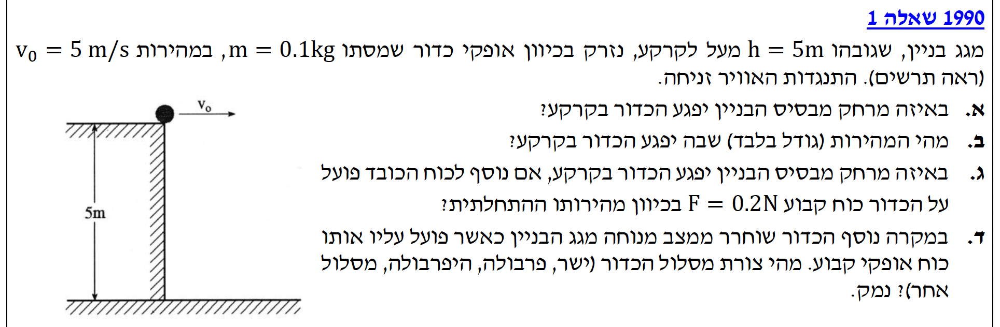
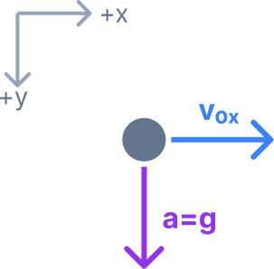
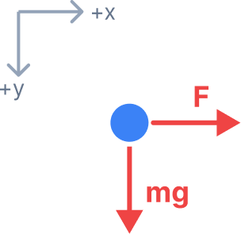
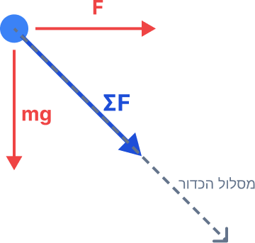

אנו מחפשים את המרחק האופקי מבסיס הבניין שבו יפגע הכדור בקרקע. במילים אחרות, עלינו למצוא את שיעור ה-\( x \) של הכדור ברגע שבו הוא מגיע לקרקע, כלומר כאשר שיעור ה-\( y \) שלו הוא \( y = 5\text{ m} \).
ראשית, נשרטט תרשים קינמטי המציג את כיווני המהירות ההתחלתית והתאוצה של הכדור באוויר.

מכיוון שזוהי זריקה אופקית (נפילה חופשית), אנו יודעים מעקרונות הקינמטיקה כי תאוצת הכדור בציר האנכי היא תאוצת הכובד כלפי מטה: \[ a_{y} = g = 10\text{ m/s}^{2} \] בציר האופקי אין תאוצה (התנגדות האוויר זניחה), ולכן המהירות נשארת קבועה: \[ a_{x} = 0 \] כעת, נשתמש בנוסחת המקום-זמן עבור הציר האנכי כדי למצוא את זמן המעוף (\( t \)) עד לפגיעה בקרקע (\( y = 5\text{ m} \)): \[ y = y_{0} + v_{0y}t + \frac{1}{2}a_{y}t^{2} \] נציב את הנתונים הידועים לנו: \[ 5 = 0 + 0 \cdot t + \frac{1}{2} \cdot 10 \cdot t^{2} \] \[ 5 = 5t^{2} \Rightarrow t^{2} = 1 \Rightarrow t = 1\text{ s} \] כעת, משמצאנו שהכדור באוויר בדיוק שנייה אחת, נציב זמן זה בנוסחת המקום-זמן של הציר האופקי כדי למצוא את המרחק האופקי: \[ x = x_{0} + v_{0x}t + \frac{1}{2}a_{x}t^{2} \] \[ x = 0 + 5 \cdot 1 + \frac{1}{2} \cdot 0 \cdot 1^{2} \] \[ x = 5\text{ m} \]
אנו מחפשים את גודל המהירות הכוללת של הכדור ברגע שבו הוא פוגע בקרקע (גודל בלבד, ללא כיוון). עלינו לחשב את הרכיב האופקי והאנכי של המהירות ברגע זה, ולאחר מכן לחשב את גודל הווקטור השקול.
נחשב את רכיב המהירות בציר האופקי ברגע הפגיעה. מכיוון שהתאוצה בציר זה אפס (\( a_{x} = 0 \)), המהירות נשארת קבועה: \[ v_{x} = v_{0x} + a_{x}t = 5 + 0 \cdot 1 = 5\text{ m/s} \] כעת, נחשב את רכיב המהירות בציר האנכי ברגע הפגיעה: \[ v_{y} = v_{0y} + a_{y}t = 0 + 10 \cdot 1 = 10\text{ m/s} \] כדי למצוא את גודל המהירות הכוללת (\( v \)), שהיא בעצם אורך וקטור המהירות השקול, נשתמש במשפט פיתגורס. המהירות היא השקול של שני הרכיבים המאונכים זה לזה: \[ v = \sqrt{v_{x}^{2} + v_{y}^{2}} \] נציב את הערכים שחישבנו: \[ v = \sqrt{5^{2} + 10^{2}} = \sqrt{25 + 100} = \sqrt{125} \] \[ v \approx 11.18\text{ m/s} \]
אנו מחפשים כעת את המרחק האופקי החדש (\( x \)) מבסיס הבניין שבו יפגע הכדור בקרקע בהשפעת הכוח הנוסף.
נשרטט תרשים כוחות מעודכן (FBD) ובו נראה שעל הכדור פועלים כעת שני כוחות מאונכים.

כעת נבדוק את הציר האופקי. הפעם ניעזר בחוק השני של ניוטון, כיוון ששקול הכוחות אינו אפס: \[ \Sigma F_{x} = F \] נציב את הנתונים שלנו לתוך החוק השני של ניוטון: \[ 0.2 = 0.1 \cdot a_{x} \] נחלק את שני האגפים ב-0.1 ונקבל את התאוצה החדשה בציר האופקי: \[ a_{x} = 2\text{ m/s}^{2} \] נציב את התאוצה החדשה, זמן המעוף והמהירות ההתחלתית בתוך משוואת המקום-זמן של הציר האופקי כדי למצוא את המרחק החדש: \[ x = x_{0} + v_{0x}t + \frac{1}{2}a_{x}t^{2} \] \[ x = 0 + 5 \cdot 1 + \frac{1}{2} \cdot 2 \cdot 1^{2} \] \[ x = 5 + 1 = 6\text{ m} \]
אנו מתבקשים לקבוע מהי צורת מסלול הכדור (ישר, פרבולה, היפרבולה או מסלול אחר) במרחב ולנמק מדוע.
ננתח את סכום הכוחות הווקטורי הפועל על הכדור: \[ \Sigma\vec{F} = \vec{F}_{x} + \vec{F}_{y} = \vec{F} + m\vec{g} \] מכיוון שגם הכוח \( \vec{F} \) וגם כוח הכובד \( m\vec{g} \) הם וקטורים קבועים (קבועים בגודלם ובכיוונם), הסכום הווקטורי שלהם הוא וקטור כוח שקול חדש ומלוכסן, שגם הוא קבוע לחלוטין לאורך כל התנועה.

על פי החוק השני של ניוטון, וקטור התאוצה של הכדור פרופורציונלי לווקטור הכוח השקול וכיוונו ככיוון הכוח השקול: \[ \vec{a} = \frac{\Sigma\vec{F}}{m} \] משמעות הדבר היא שווקטור התאוצה \( \vec{a} \) של הכדור קבוע בגודלו ובכיוונו לאורך כל זמן הנפילה. כאשר גוף משוחרר ממנוחה (\( \vec{v}_{0} = 0 \)) ופועלת עליו תאוצה כיוונית קבועה, הוא צובר מהירות אך ורק בכיוון וקטור התאוצה. לפיכך, הגוף ינוע במסלול של קו ישר לאורך כיוונו של הכוח השקול.